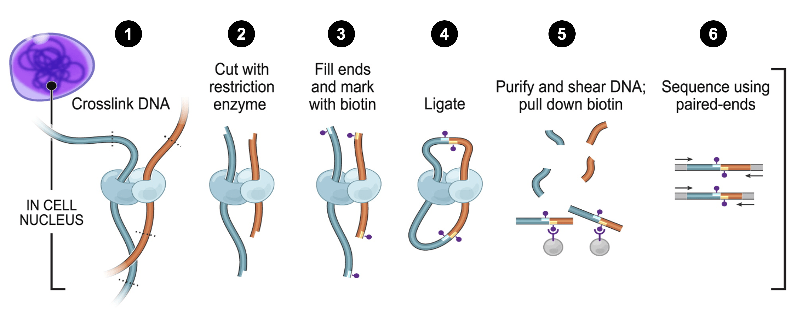
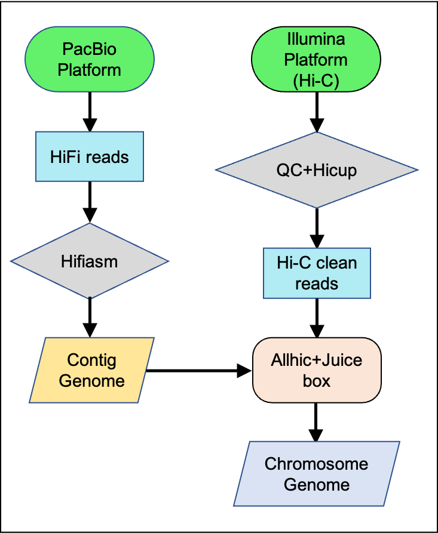
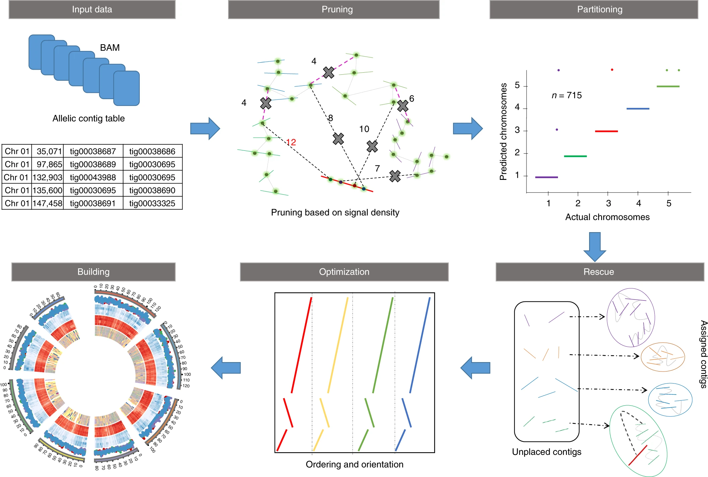

Novogene Hi-C chromosome construction report
| Contract Number | X101SCXXXXXXXX |
| Contract Name | XXXXXXXXXXXXXXXXXXXXXXXXXXXXXXXXXX |
| Phase Number | X101SCXXXXXXXX-Z01-J003 |
| Report Time | 2024-10-30 |
1 Background
Hi-C is a powerful genomic technology used to study the three-dimensional architecture of genomes. It is an extension of the Chromosome Conformation Capture (3C) technique and provides high-resolution insights into how chromosomes fold and interact within the nucleus. Hi-C technology combines the principles of chromosome conformation capture with high-throughput sequencing to study the three-dimensional organization of genomes. Hi-C data is particularly useful in scaffolding contigs and organizing them into chromosome-level assemblies.
1.1 Workflow of Hi-C technology and sequencing
Here's the typical workflow as shown in Figure 1:1. Treat the cells with paraformaldehyde to crosslink DNA with proteins and other DNA regions that are in close proximity in the nucleus; 2. After cell lysis, digest the crosslinked chromatin using a restriction enzyme to cut the DNA at specific sites; 3. For end repair, fill ends and mark oligonucleotide with biotins; 4. Ligate adjacent DNA fragments using ligase; 5. Digest using protease to reverse the crosslinks followed by DNA purification, and pull down biotin-labelled DNA using streptavidin beads; 6. Prepare the library using purified DNA and perform sequencing using high-throughput technologies like Illumina sequencing.

Figure1.1 Workflow of Hi-C technology and sequencing
1.2 Workflow of chromosome construction
Hi-C technology captures interaction information between spatially connected DNA fragments that are physically distant, using specialized experimental techniques. This technology allows for the differentiation of contigs or scaffolds into different chromosomes, based on the significantly higher probability of interaction within chromosomes compared to between chromosomes. Within a single chromosome, the probability of interaction decreases as the distance between interacting fragments increases. This property facilitates the sorting and orientation of contigs or scaffolds within their respective chromosomes.To achieve a high-quality genome assembly, the process begins with generating initial contigs using traditional sequencing methods such as Illumina, PacBio, or Nanopore, which provide both short and long reads. Next, Hi-C libraries are prepared and sequenced to obtain Hi-C interaction data, capturing the spatial organization of the genome. The Hi-C reads are then mapped back to the initial contigs, allowing the identification of interaction pairs. Specialized software ALLhic utilize this Hi-C interaction data to order and orient the contigs into scaffolds, thereby enhancing the assembly's continuity and accuracy. Finally, the assembled scaffolds undergo validation and refinement to ensure consistency and accuracy, resulting in a reliable and comprehensive genomic map. The pipeline is illustrated in Figure 1.2.

Figure1.2 Chromosome construction pipeline
The main steps involved in genome scaffolding and clustering using ALLHiC (https://github.com/tangerzhang/ALLHiC) include Partition, Rescue, and Optimize. After completing these steps, we manually corrected the heatmaps using Juicebox. Finally, a chromosome-level assembly is obtained, and the heat map is generated.

Figure1.3 ALLHiC workflow3
2 Chromosome construction results
2.1 Genome assembly results statistics
Based on the Hi-C data obtained from sequencing, the assembled contigs/scaffolds were organized into chromosome-level sequences using the ALLHiC software. This process allowed us to achieve a chromosome-level genome assembly. The results of the XXX genome assembly are presented in Table 2.1 below. For statistical analysis, only contigs longer than 100bp were included.
Table2.1 Genome statistics
| Sample ID | Contig length | Scaffold length | Contig number | Scaffold number |
|---|---|---|---|---|
| total | 1,306,282,582 | 1,306,296,482 | 564 | 425 |
| Max | 55,722,280 | 103,729,348 | - | - |
| N50 | 27,843,004 | 65,593,168 | 18 | 8 |
| N90 | 7,106,979 | 42,393,931 | 50 | 18 |
2.2 Statistics of genome scaffolding
The results, including the number of clusters per chromosome, the length of each chromosome, and the genome loading rate, are presented in Tables 2.2 and 2.3 below:
Table2.2 Statistics of cluster number and length of a single chromosome
| Sequeues ID | Cluster Number | Sequeues Length |
|---|---|---|
| Chr01 | 9 | 65,592,368 |
| Chr02 | 3 | 64,758,852 |
| Chr03 | 8 | 42,720,256 |
| Chr04 | 2 | 75,929,938 |
| Chr05 | 5 | 53,025,760 |
| Chr06 | 5 | 97,468,562 |
| Chr07 | 5 | 55,932,177 |
| Chr08 | 3 | 41,989,348 |
| Chr09 | 9 | 103,728,548 |
| Chr10 | 4 | 42,393,631 |
| Chr11 | 9 | 56,536,227 |
| Chr12 | 4 | 44,202,074 |
| Chr13 | 3 | 42,589,099 |
| Chr14 | 6 | 48,607,584 |
| Chr15 | 8 | 54,329,160 |
| Chr16 | 9 | 77,057,724 |
| Chr17 | 4 | 84,367,557 |
| Chr18 | 3 | 96,780,914 |
| Chr19 | 6 | 75,496,647 |
Sequence ID: The name of this chromosome.
Cluster number: The number of contigs within this chromosome.
Sequence length: The total length of this chromosome.
Table2.3 Genome loading rate
| Class | Scaffold Number | Total Length |
|---|---|---|
| place | 19 | 1,223,515,026 |
| unplace | 406 | 82,781,456 |
| total | 425 | 1,306,296,482 |
| loading_rate | 93.66% |
Place: Genome assembled at the chromosome level.
Unplace: Genome not assembled at the chromosome level.
Total: The total number/length of genome.
Loading rate: Place length/unplace length x 100%.
Place scaffold number: The number of scaffolds is the same as the number of chromosomes.
Unplace scaffold number: The number of scaffolds that are not genome scaffolding.
From Tables 2.2 and 2.3, it can be observed that after the Hi-C technology-assisted assembly of the Dl genome, 19 sequences were assembled to the chromosome level, while 406 sequences remained unassembled at this level. The genome loading rate is 93.66%. For statistical purposes, only contigs longer than 100bp were considered.
2.3 Hi-C heatmap
Figure2.1 Frequency of chromatin interactions in Heatmap
3 Conclusion
Using the sequenced Hi-C data, the assembly of the Dl genome was assisted, enabling it to reach the chromosome level. The results of the chromosomal genome assembly are as follows: the total length of contigs is 1,306,282,582 bp, with a contig N50 length of 27,843,004 bp; the total length of scaffolds is 1,306,296,482 bp, with a scaffold N50 length of 65,593,168 bp. The genome loading rate is 93.66%. Overall, the genome indices and assembly quality are satisfactory. For statistical purposes, only contigs longer than 100bp were considered.
4 References
Lieberman-Aiden, E. et al. Comprehensive mapping of long-range interactions reveals folding principles of the human genome. Science 326, 289-293 (2009). https://doi.org:10.1126/science.1181369
Dekker, J., Rippe, K., Dekker, M. & Kleckner, N. Capturing chromosome conformation. Science 295, 1306-1311 (2002). https://doi.org:10.1126/science.1067799
Zhang, X., Zhang, S., Zhao, Q., Ming, R. & Tang, H. Assembly of allele-aware, chromosomal-scale autopolyploid genomes based on Hi-C data. Nature Plants 5, 833-845 (2019). https://doi.org:10.1038/s41477-019-0487-8
Durand, N. C. et al. Juicebox Provides a Visualization System for Hi-C Contact Maps with Unlimited Zoom. Cell Syst 3, 99-101 (2016). https://doi.org:10.1016/j.cels.2015.07.012
Li, H. & Durbin, R. Fast and accurate short read alignment with Burrows-Wheeler transform. Bioinformatics 25, 1754-1760 (2009). https://doi.org:10.1093/bioinformatics/btp324
Li, H. et al. The Sequence Alignment/Map format and SAMtools. Bioinformatics 25, 2078-2079 (2009). https://doi.org:10.1093/bioinformatics/btp352
Wang, K., Li, M. & Hakonarson, H. ANNOVAR: functional annotation of genetic variants from high-throughput sequencing data. Nucleic Acids Res 38, e164 (2010). https://doi.org:10.1093/nar/gkq603
Yaffe, E. & Tanay, A. Probabilistic modeling of Hi-C contact maps eliminates systematic biases to characterize global chromosomal architecture. Nature Genetics 43, 1059-1065 (2011). https://doi.org:10.1038/ng.947
5 Appendix
Table5.1 Software Description List
| Step | Software | Version | Parameter |
|---|---|---|---|
| Genome scaffolding | ALLhic | 0.9.8 | Default |
| Heatmap | Juicebox | 1.11.08 | Default |
Total: Total number/length of contig/scaffold for genome.
Max: The length of the longest contig/scaffold in genome.
Nx0: Sort the obtained genome contig in descending order of length, and sequentially add up the lengths until the cumulative length is not less than x0% of the total length of genome.